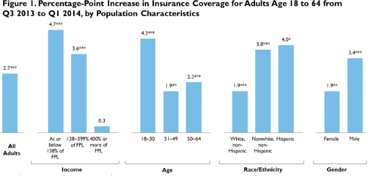

|  |
|
||||||||||||||||||||||||||||||||||||||||||||||||||||||||||||||||||||||||||||||||||||||||||||||||||||||||||||||||||||||||||||||||||||||||||||||||||||||||||||||||||||||||||||||||||||||||||||||||||||||||||||||||||||||||||||||||||||||||||||||||||||||||||||||||||||||||||||||||||||||||||||||||||||||||||||||||||||||||||||||||||||||||||||||||||||||||||||||||||||||||||||||||||||||||||||||||||||||||||||||||||||||||||||||||||||||||||||||||||||||||||||||||||||||||||||||||||||||||||||||||||||||||||||||||||||||||||||||||||||||||||||||||||||||||||||||||||||||||||||||||||||||||||||||||||||||||||||||||||||||||||||||||||||||||||||||||||||||||||||||||||||||||||||||||||||||||||||||||||||||||||||||||||||||||||||||||||||||||||||||||||||||||||||||||||||||||||||||||||||||||||||||||||||||||||||||||||||||||||||||||||||||||||||||||||||||||||||||||||||||||||||||||||||||||||||||||||||||||||||||||||||||||||||||||||||||||||||||||||||||||||||||||||||||||||||||||||||||||||||||||||||||||||||||||||||||||||||||||||||||
Early Estimates Indicate Rapid Increase in Health Insurance Coverage under the ACA: A Promising Start
Sharon K. Long, Genevieve M. Kenney, Stephen Zuckerman, Douglas Wissoker, Dana Goin, Katherine Hempstead, Michael Karpman, and Nathaniel AndersonApril 15, 2014
January 2014 brought a major change to the US health insurance system: Medicaid was expanded to cover nearly all adults with family incomes at or below 138 percent of the federal poverty level (FPL) in 24 states and the District of Columbia (DC),1 and enrollment under the new health insurance Marketplaces created by the Affordable Care Act (ACA) officially began in all states and DC. By the end of March, enrollment in Marketplace plans was reported at just over 7 million.2 Also, reports from the Centers for Medicare and Medicaid Services (CMS) suggest that Medicaid enrollment increased between the beginning of October 2013 and the end of February 2014 (Centers for Medicare and Medicaid Services 2014). However, neither the Marketplace enrollment figures nor the CMS Medicaid report provide an accurate picture of how many uninsured people have gained coverage since open enrollment began, because both sets of enrollment figures may include newly insured people as well as those who had other sources of coverage before 2014.
We use the March 2014 Health Reform Monitoring Survey (HRMS) to examine changes in health insurance coverage in early March 2014 relative to coverage over the prior year. The HRMS was designed to provide early feedback on ACA implementation to complement the more robust assessments that will be possible when the federal surveys release their estimates of changes in health insurance coverage later in 2014 and in 2015 (Long et al. 2014). This brief expands on an initial set of findings (released on April 3, 2014) by including more disaggregated information on coverage changes and additional details on the statistical precision of the estimates.
We report regression-adjusted trends that correct for the effects of observed shifts in the characteristics of the survey respondents across quarters of the survey. We discuss changes in insurance coverage for (1) all nonelderly adults, (2) adults targeted by the Medicaid expansion and the Marketplaces, and (3) adults in states that have and have not adopted the ACA’s optional Medicaid expansion. Future policy briefs will look in more depth at changes in type of coverage and changes in health care access and affordability.
What We Did
Our analysis compares the uninsurance rate for nonelderly adults (age 18 to 64) for quarter 1 of 2014 (survey fielded in March 2014) to rates estimated from data collected during 2013.3 We focus on estimated changes in the uninsurance rate because estimates of the level of uninsurance often vary across surveys due to differences in the surveys that would be unrelated to the ACA (State Health Access Data Assistance Center 2013). While we include information for all four quarters of 2013, we focus on changes between quarter 3 of the 2013 HRMS, fielded in September 2013 just before the first Marketplace open enrollment period was initiated on October 1, 2013, and early March 2014.4
Because 80 percent of the 2014 quarter 1 HRMS sample completed the survey by March 6, these estimates do not capture coverage gains for adults that occurred with the last-minute enrollment surge in the Marketplace in late March. Also, these estimates do not reflect the effects of some important ACA provisions (such as the ability to keep dependents on a parent’s health plan until age 26 and early state Medicaid expansions) that were implemented before 2013. Therefore, these early estimates will understate coverage changes attributable to the ACA as a whole. Moreover, deriving definitive estimates of the effects of the ACA on health insurance coverage will require accounting for any changes in health insurance coverage that would have occurred independent of the ACA. That assessment will need to rely on the stronger designs, larger sample sizes, and longer time-trends that are available from the federal surveys.
While each round of the HRMS is weighted to be nationally representative, it is important in examining changes over time that we base our estimates on comparable samples over time. For example, if the share of those with insurance grows simply because more respondents were older or from higher income groups in one round of the survey, it would be incorrect to associate such a change with the ACA Marketplaces and Medicaid expansions. This is a particular challenge in comparing estimates from survey samples over time because the composition of the sample that is surveyed can change from round to round in ways that are not fully captured in the weights and that may distort the estimates of change.
In presenting our findings, we focus on statistically significant changes in insurance coverage over time (defined as differences that are significantly different from zero at the 5 percent level or lower) and highlight changes relative to September 2013, just before the open enrollment period for the Marketplaces began. We provide a 95 percent confidence interval (CI) for key estimates.6 The basic patterns shown for the regression-adjusted measures are similar to those based solely on simple weighted (unadjusted) estimates. We report the regression-adjusted estimates in the body of the brief (in tables 1-3) and the weighted (unadjusted) estimates in tables 4-6 at the end of the brief. In extrapolating from our estimates of changes in uninsurance rates to the number of adults who have gained coverage over the same period, we use projections for the size of the 2014 population from the US Census Bureau.7
What We Found
The number of uninsured nonelderly adults fell by an estimated 5.4 million between September 2013 and early March 2014. In early March 2014, the uninsurance rate for nonelderly adults was estimated to be 15.2 percent for the nation, a drop of 2.7 percentage points (95% CI [1.6, 3.8]) since September 2013 (figure 1).8 Applying the estimated 2.7 percentage point decrease in the uninsured rate to the estimated number of nonelderly adults in the nation, these results indicate that the number of uninsured adults declined by 5.4 million between September and early March (95% CI [3.2 million, 7.6 million]). Because this estimate does not capture the surge in enrollment that occurred in the Marketplace in late March, the drop in the uninsurance rate and number of uninsured by the end of March was likely even higher.
Particularly strong gains in coverage were reported by the low- and middle-income adults targeted by the ACA's key coverage provisions. Insurance coverage increased by 4.7 percentage points (95% CI [1.5, 7.9]) for the adults with family income at or below 138 percent of FPL who were targeted by the ACA's Medicaid expansion and by 3.6 percentage points (95% CI [1.9, 5.3]) for the middle-income adults (139 to 399 percent of FPL) who were targeted by the new subsidies available for health insurance coverage through the Marketplaces (table 1).
There were also strong gains in coverage for young adults (age 18 to 30) (up 4.3 percentage points; 95% CI [1.4, 7.2]) and nonwhite, non-Hispanic adults (up 3.8 percentage points; 95% CI [1.2, 6.4]), groups that have historically had higher than average uninsurance rates. The gain in coverage for Hispanic adults, while also large (4.0 percentage points; 95% CI [0.0, 8.0]), was not statistically significant at the 5 percent level. Coverage rates increased for both men and women (3.4 percentage points; 95% CI [1.9, 4.9] for men versus 1.9 percentage points; 95% CI [0.3, 3.5] for women). Historically, men have had a higher rate of uninsurance than women.
States that implemented the ACA's Medicaid expansion saw a large decline in uninsurance. The uninsurance rate for adults in those states dropped 4.0 percentage points (95% CI [2.7,5.3]) since September, compared with a drop of 1.5 percentage points (95% CI [0.3,2.7]) for the nonexpansion states. The average uninsurance rate for adults in the 26 nonexpansion states was 18.1 percent (95% CI [17.0, 19.2]) in March 2014, well above the 12.4 percent average in the expansion states (95% CI [11.3, 13.5]) (table 2). The gap in the uninsurance rate between expansion and nonexpansion states widened between September 2013 and early March 2014, from 3.2 to 5.7 percentage points.9
Not surprisingly, low-income adults targeted by the Medicaid expansion had particularly large gains in insurance coverage in the states that expanded Medicaid (figure 2). Insurance coverage increased by 9.4 percentage points (95% CI [3.5, 15.3]) for low-income adults with incomes at or below 138 percent of FPL in the expansion states compared to virtually no change in the nonexpansion states (only 0.4 percentage points; 95% CI [-2.8, 3.6]). In contrast, adults in the middle-income group (i.e. between 138 and 399 percent of FPL) who could qualify for Marketplace subsidies experienced similar gains in coverage in the expansion and nonexpansion states (3.9 percentage points versus 3.3 percentage points; 95% CI [1.2, 6.6] and [1.2, 5.5], respectively). In the expansion states, other population subgroups also had strong gains in insurance coverage, including young adults, men, and Hispanic adults.
What It Means
Despite the implementation challenges, early evidence suggests that significant gains in coverage occurred since the beginning of the first Marketplace open enrollment period, especially in the states that have expanded Medicaid eligibility under the ACA. We estimate that the number of uninsured adults fell by 5.4 million between September 2013 and early March 2014. As reported above, the magnitude of the estimated 5.4 million drop in uninsured has a 95 percent confidence interval of 3.2 to 7.6 million. Given the surge in enrollment in the Marketplaces at the end of March, we would expect that gains in coverage over the full month will be even higher. The findings from our upcoming quarter 2 round of the HRMS that will be fielded in June 2014 will capture coverage in the Marketplaces and Medicaid through the completion of the first open enrollment period. It will also show any continuing gains in enrollment under both Medicaid and the Marketplaces’ special enrollment provisions.
The HRMS, like the Gallup and RAND surveys, finds a decline in the uninsured rate among nonelderly adults between the last quarter of 2013 and the first quarter of 2014 (Carman and Eibner 2014; Levy 2014). Moreover, information released by CMS indicates larger Medicaid enrollment increases in expansion states than in nonexpansion states, which is consistent with our finding of greater declines in the uninsured in those states (Centers for Medicare and Medicaid Services 2014). The HRMS, Gallup, and RAND surveys find that the uninsured rate dropped significantly between late 2013 and March 2014, though the estimated magnitude of the change differs. A definitive assessment of the magnitude of the changes in coverage occurring nationally and by state and population subgroups will have to wait for data from the federal surveys, with their stronger designs, larger sample sizes, much higher response rates, and longer time-trends.
While the early gains in coverage found on 2014 quarter 1 HRMS are noteworthy (particularly in the states that expanded Medicaid), the uninsurance rate for low-income adults across the nation remains quite high (34.5 percent). In the expansion states, where the uninsurance rate for low-income adults was 27.8 percent at the time of our most recent survey, the opportunity remains for substantial coverage gains under the Medicaid program. In the nonexpansion states, where the uninsurance rate for low-income adults was at 40.7 percent, low-income adults have few paths to coverage in the absence of Medicaid.10
While a full accounting of the effects of the ACA on changes in insurance coverage is not possible yet, these early findings suggest that the Medicaid expansion and the provision of subsidies in the new health insurance Marketplaces are likely contributing to increases in health insurance coverage among nonelderly adults. We find larger coverage gains in the states that expanded Medicaid for adults, overall and specifically among adults with incomes at or below 138 percent of FPL, but cannot definitively attribute those differences to the Medicaid expansion because expansion states differed from nonexpansion states in other ways that could affect changes in coverage over this period. In particular, states that expanded Medicaid were also more likely to implement a state-based Marketplace as opposed to relying on the federally facilitated Marketplaces, and the state-based Marketplaces had access to substantially greater resources for outreach and enrollment activities (Blumberg et al. 2014; Hill et al. 2014). Disentangling the effects of the range of state policy decisions being made under the ACA will require waiting for data from the federal surveys, which have larger sample sizes, longer time series, and more in-depth information.
References
Blumberg, Linda J., John Holahan, Genevieve M. Kenney, Matthew Buettgens, Nathanial Anderson, Hannah Recht, and Stephen Zuckerman. 2014. “Measuring Marketplace Enrollment Relative to Projections.” Washington, DC: Urban Institute.
Carman, Katherine Grace, and Christine Eibner. 2014. “Changes in Health Insurance Enrollment Since 2013.” Santa Monica, CA: RAND Corporation.
Centers for Medicare and Medicaid Services. 2014. “Medicaid and CHIP: February 2014 Monthly Applications, Eligibility Determinations, and Enrollment Report.” Baltimore: US Department of Health and Human Services, Centers for Medicare and Medicaid Services.
Decker, Sandra L., Genevieve M. Kenney, and Sharon K. Long. 2014. “Characteristics of Low-Income Adults in States Expanding vs. Not Expanding Medicaid.” JAMA Internal Medicine.
Hill, Ian, Margaret Wilkinson, and Brigette Courtot. 2014. “The Launch of the Affordable Care Act in Selected States: Outreach, Education, and Enrollment Assistance.” Washington, DC: Urban Institute.
Levy, Jenna. 2014. “In U.S., Uninsured Rate Lowest Since 2008.” Washington, DC: Gallup.
Long, Sharon K., Genevieve M. Kenney, Stephen Zuckerman, Dana E. Goin, Douglas Wissoker, Frederic Blavin, Linda J. Blumberg, Lisa Clemans Cope, John Holahan, and Katherine Hempstead. 2014. “The Health Reform Monitoring Survey: Addressing Data Gaps to Provide Timely Insights into the Affordable Care Act. 2014. Health Affairs. 33(1): 161-167.
Sommers, Benjamin D., Genevieve M. Kenney, and Arnold M. Epstein. 2014. “New Evidence on the Affordable Care Act: Coverage Impacts of Early Medicaid Expansions.” Health Affairs 33(1): 78–87.
State Health Access Data Assistance Center. 2013. “Comparing Federal Government Surveys that Count the Uninsured.” Minneapolis, MN: Robert Wood Johnson Foundation.
About the Series
This brief is part of a series drawing on the Health Reform Monitoring Survey (HRMS), a quarterly survey of the nonelderly population that is exploring the value of cutting-edge Internet-based survey methods to monitor the Affordable Care Act (ACA) before data from federal government surveys are available. The briefs provide information on health insurance coverage, access to and use of health care, health care affordability, and self-reported health status, as well as timely data on important implementation issues under the ACA. Funding for the core HRMS is provided by the Robert Wood Johnson Foundation, the Ford Foundation, and the Urban Institute.
For more information on the HRMS and for other briefs in this series, visit www.urban.org/hrms.
About the Authors
Sharon K. Long is a senior fellow, Genevieve M. Kenney and Stephen Zuckerman are senior fellows and co-directors, Dana Goin and Michael Karpman are research associates, and Nathaniel Anderson is a research assistant in the Urban Institute’s Health Policy Center. Douglas Wissoker is a senior fellow at the Urban Institute. Katherine Hempstead is a senior program officer at the Robert Wood Johnson Foundation.
The authors gratefully acknowledge the suggestions and assistance of Linda J. Blumberg, John Holahan, Frederic Blavin, Lisa Clemans-Cope, and Bowen Garrett.
Note 1 Early evidence suggests gains in coverage in states that expanded Medicaid in advance of 2014. See, for example, Sommers et al. (2014). States that expanded Medicaid by April 1, 2014, are AZ, AR, CA, CO, CT, DE, DC, HI, IL, IA, KY, MD, MA, MN, NV, NJ, NM, NY, ND, OH, OR, RI, VT, WA, and WV. 2 Barack Obama. “Remarks by the President on the Affordable Care Act,” Washington, DC: The White House., April 1, 2014. 3 In this brief, we are not looking at the effects of the ACA on coverage for children, but recognize that their coverage may also be affected as their parents enroll in coverage for themselves or by other provisions of the ACA. 4 Although coverage for people enrolling between October and December 2013 did not start until January 2014, some who signed up in the fall may have reported having coverage during the December 2013 HRMS survey. The quarter 1 2014 round of the HRMS was fielded between February 28, 2014 and March 21, 2014. 6 While we focus on estimates that are statistically significant at the 5 percent level or lower in the text, the tables and figures report on statistical significance at the 1, 5 and 10 percent levels. 7 We used 2014 national population predictions available from the US Census Bureau. These files give population projections by race, ethnicity, and sex of all ages from 2012 to 2060 based on estimated birth rates, death rates, and net migration rates over the time period. Using the “Table 1, Middle Series” file (which has a 2014 projected population of 318,892,103), we summed the 2014 population projections for all 18–64 year-olds to arrive at 198,461,688 nonelderly adults in 2014. See US Census Bureau, “2012 National Population Projections: Downloadable Files,” US Department of Commerce, last revised May 15, 2013. 8 The estimates of uninsurance reported here differ from some early estimates that have been reported elsewhere for quarters 1 and 2 of the HRMS. We revised the editing process for insurance coverage in quarter 3 to make better use of information from an open-ended follow-up question that was added in quarter 2 to capture type of insurance coverage for those who said they were covered but did not pick a type of coverage from the list that was provided. 9 Work with the National Health Interview Survey has shown that uninsured rates were higher for low-income adults in the nonexpanding states in 2010–2012. Therefore, the apparent recent changes in insurance coverage found here have likely exacerbated the coverage gap for low-income adults between expanding and nonexpanding states (Decker et al. 2014). 10 In states that did not choose to expand Medicaid, adults with incomes between 100 and 138 percent of FPL who do not have access to an affordable offer of employer coverage are eligible for Marketplace-based subsidies.
|
|||||||||||||||||||||||||||||||||||||||||||||||||||||||||||||||||||||||||||||||||||||||||||||||||||||||||||||||||||||||||||||||||||||||||||||||||||||||||||||||||||||||||||||||||||||||||||||||||||||||||||||||||||||||||||||||||||||||||||||||||||||||||||||||||||||||||||||||||||||||||||||||||||||||||||||||||||||||||||||||||||||||||||||||||||||||||||||||||||||||||||||||||||||||||||||||||||||||||||||||||||||||||||||||||||||||||||||||||||||||||||||||||||||||||||||||||||||||||||||||||||||||||||||||||||||||||||||||||||||||||||||||||||||||||||||||||||||||||||||||||||||||||||||||||||||||||||||||||||||||||||||||||||||||||||||||||||||||||||||||||||||||||||||||||||||||||||||||||||||||||||||||||||||||||||||||||||||||||||||||||||||||||||||||||||||||||||||||||||||||||||||||||||||||||||||||||||||||||||||||||||||||||||||||||||||||||||||||||||||||||||||||||||||||||||||||||||||||||||||||||||||||||||||||||||||||||||||||||||||||||||||||||||||||||||||||||||||||||||||||||||||||||||||||||||||||||||||||||||||||

 |
 |
 |